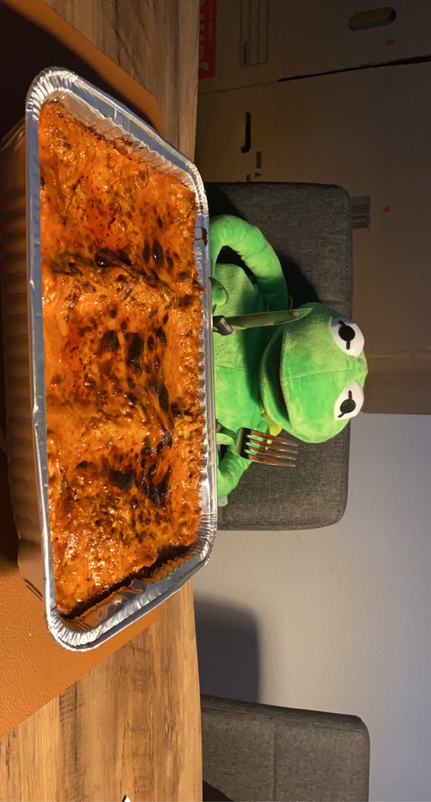

Simpel Knorrs Lasagne Opskrift

Ingridienser
- 1 Knorrs Lasagne Pakke
- 4 dl vand
- 5 dl mælk (sødmælk)
- 400-500g hakket oksekød
- 25g smør
Fremgangsmåde
Koge Fase
- Før opvarm ovnen med varmluft til 200 grader
- Herefter smælt 25g smør i en gryde og tilsæt oksekødet
- Hak kødet ud imens du steger det
- Når kødet er brunt så tag gryden af blusset og tilsæt "smagen"
- Bland smagen, tilsæt vandet og rør det ind
- Flyt gryden tilbage til blusset og tilsæt mælk
- Rør det det ikke brænder på men lad blandingen koge i 1-2 min
- Når blandingen har kogt op fjern fra blusset og begynd at tilsætte til fadet
- Skift mellem lag af blandingen og pasta pladerne
(Der skal helst være 3 lag plader og 5 lag kødsovs)
Ovn Fase
Sæt lasagne i ovnen og kig til den henholdsvis 20min / 25 min / 30 min
Tag den ud når overfladne er fast men ikke brændt på